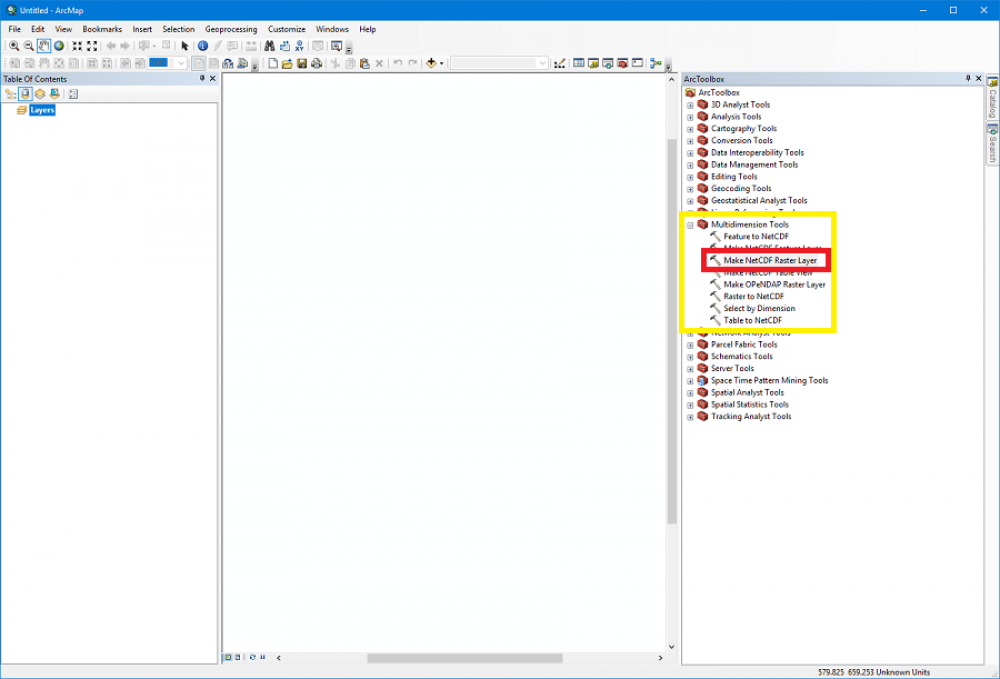
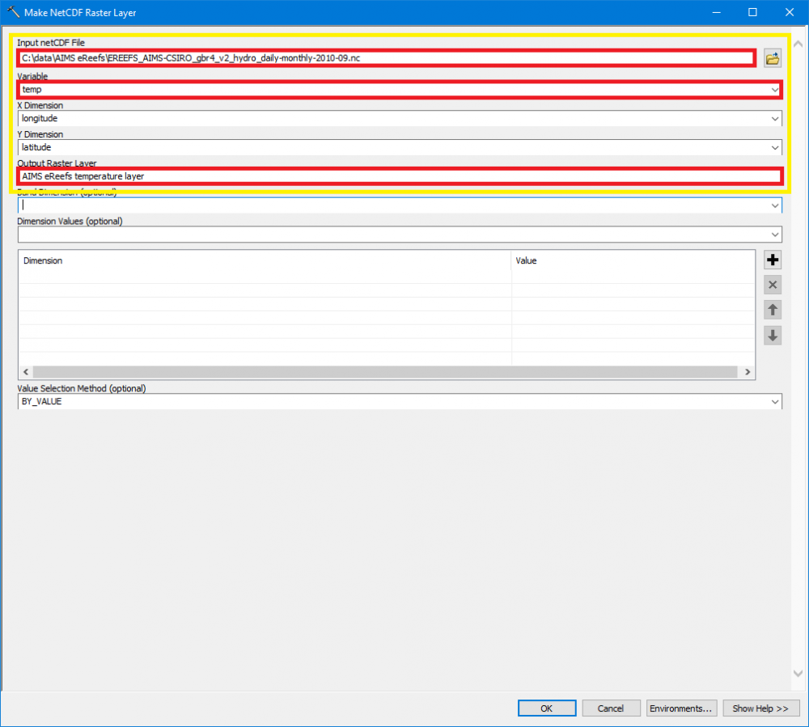
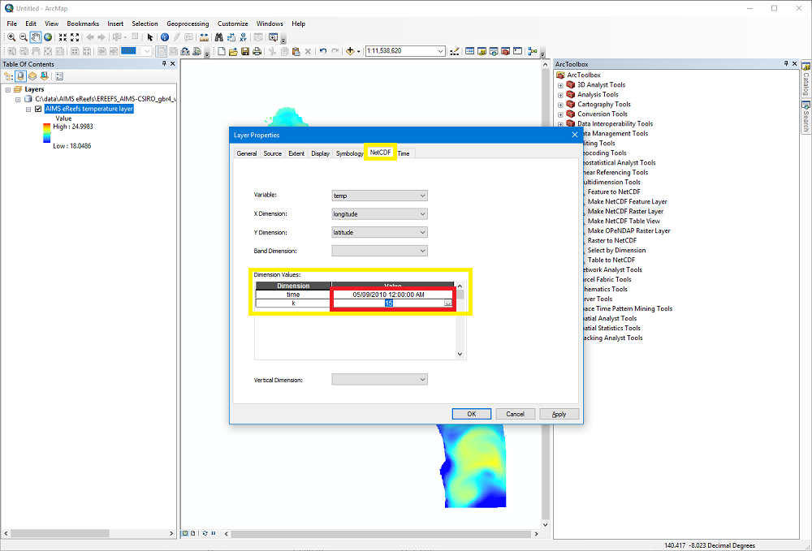
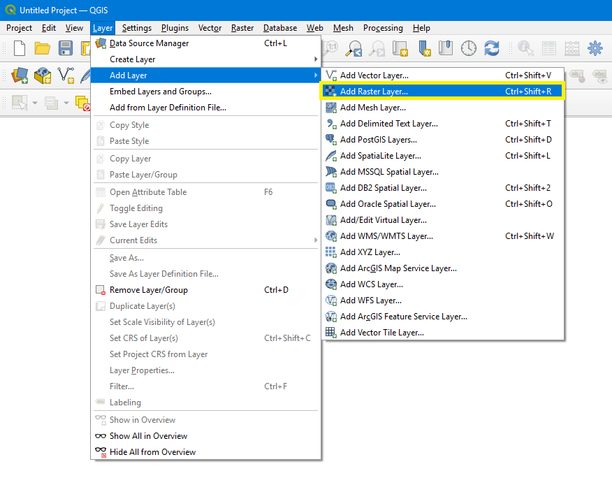
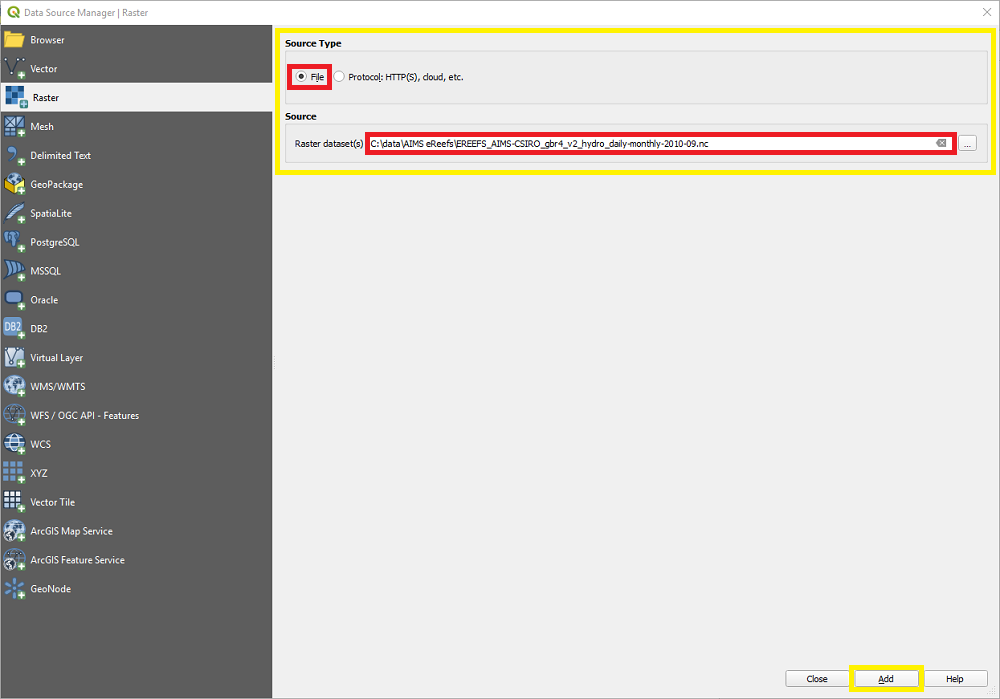
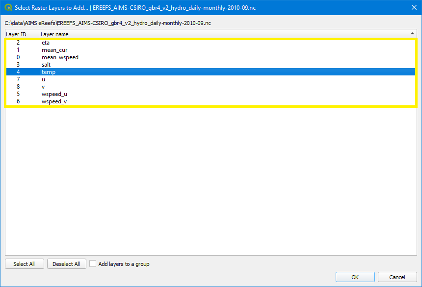
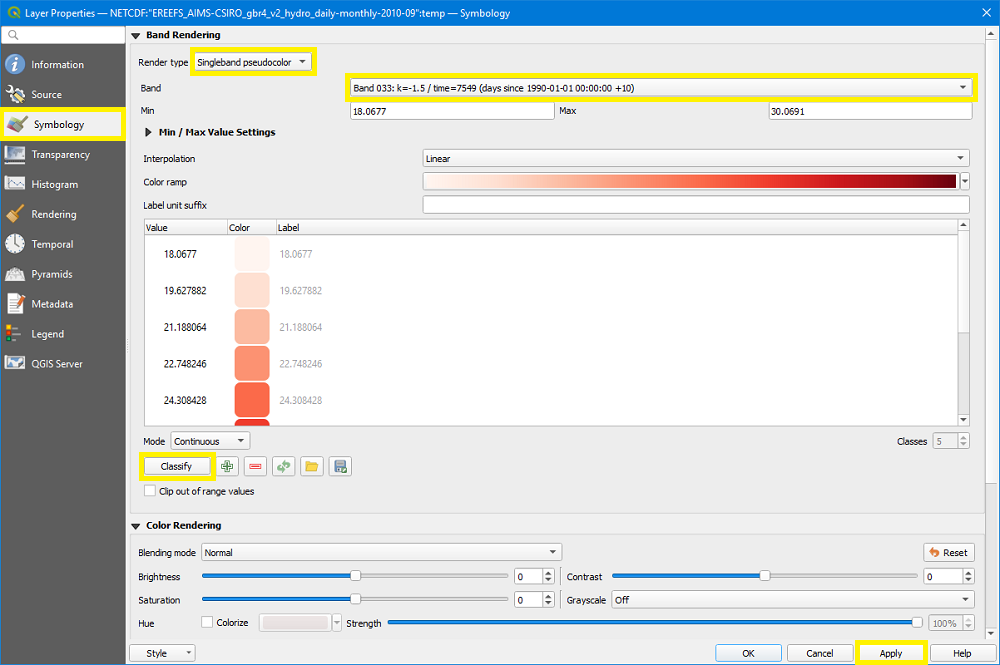

How to open a NetCDF file with ArcMap and QGIS
For the visualisations on these pages the AIMS eReefs system aggregates the raw eReefs data and creates new NetCDF files (see also ArcGIS What is netCDF data?). These files can be downloaded from the AIMS eReefs THREDDS server (for more information on how to download the files see the tutorial How to manually download derived data from THREDDS). Once downloaded, the files can be visualised and analysed using common GIS tools like ArcMap and QGIS.
Note: This tutorial refers only to the NetCDF files produced by the AIMS eReefs system (AIMS eReefs derived data) and not the raw eReefs data produced by CSIRO (available on the NCI THREDDS server). This is due to the usage of a curvilinear grid in the raw eReefs data which is better suited to the modelling and execution requirements than a rectilinear grid. However curvilinear grids are incompatible with many off-the-shelf GIS software packages (including ArcMap and QGIS) and can be cumbersome to process with typical data science tools. Therefore, all eReefs derived datasets generated by the AIMS eReefs system have been regridded to a rectilinear grid.
Open a derived NetCDF file with ArcMap
For this step-by-step tutorial ArcMap version 10.6.1 was used.
ArcMap provides good tutorials about handling NetCDF files on their website. This step-by-step description follows the tutorial Displaying a raster layer from a netCDF file.
- Download the file of interest (see How to manually download derived data from THREDDS for more information).
- Start ArcMap.
- Select the tool "Make NetCDF Raster Layer" by either using the "Search" or expanding the branch "Multidimension Tools" in the "ArcToolbox".

In the popup window
- For the input field "Input netCDF File" select the NetCDF file downloaded in step 1.
- Click the Variable drop-down arrow and choose a variable from the list.
- Leave the default values for "X Dimension" and "Y Dimension".
- Enter a layer name in the input field "Output Raster Layer".
- Optionally, to create a multiband raster, click the Band Dimension drop-down arrow and choose a dimension from the list.
- Leave the optional input "Dimension values" blank, this will be adjusted in the next step.
- Click "OK" to start the processing.
Once the layer is processed and shown in the "Layers" tab, double-click on the layer to open the "Properties" window
- Select the "NetCDF" tab at the top of the window.
- In the "Dimension Values" field
Select a value for the time.
And select a value for the depth (dimension "k").
Here is an overview of the values for this dimension depending on the selected model:Mapping of dimension k to depth value in meters Index (k) Hydrodynamic 1km model Hydrodynamic and BioGeoChemical 4km model 1 -140.00 m -145.00 m 2 -120.00 m -120.00 m 3 -103.00 m -103.00 m 4 -88.00 m -88.00 m 5 -73.00 m -73.00 m 6 -60.00 m -60.00 m 7 -49.00 m -49.00 m 8 -39.50 m -39.50 m 9 -31.00 m -31.00 m 10 -24.00 m -23.75 m 11 -18.00 m -17.75 m 12 -13.00 m -12.75 m 13 -9.00 m -8.80 m 14 -5.25 m -5.55 m 15 -2.35 m -3.00 m 16 -0.50 m -1.50 m 17 n/a -0.50 m
- Click "OK" to close the property window and apply the changes.

Open a derived NetCDF file with QGIS
For this step-by-step tutorial QGIS version 3.14.1-Pi was used.
- Download the file of interest (see How to manually download derived data from THREDDS for more information).
- Start QGIS.
- In the top menu select "Layer" -> "Add Layer" -> "Add Raster Layer".

In the popup window ("Data Source Manager")
- As "Source type" select "File".
- In the "Source" input field select the NetCDF file downloaded in step 1.
- Click the "Add" button.
- Another popup window opens. Select one or more variables and click "OK".
- Close the "Data Source Manager" window by clicking the "Close" button.
By default QGIS uses a multiband symbology. To adjust this and select the time and depth, double click on the layer and select the "Symbology" tab on the left.
- For a single band rendering, switch the "Render type" to either "Singleband gray" or "Singleband pseudocolor". For the remainder of this description we will use "Singleband pseudocolor".
- Select a "Band". Each band is a combination of time and depths. Unfortunately, QGIS displays the time values as "days since 1990-01-01", but you can use an online tool like timeanddate.com to calculate the date.
- Click the "Apply" button to trigger a recalculation of the "Min" and "Max" values.
- Optionally, after the "Min" and "Max" values have changed you can click the "Classify" button to re-classify the label values.
- Click "OK" to close the property window.
